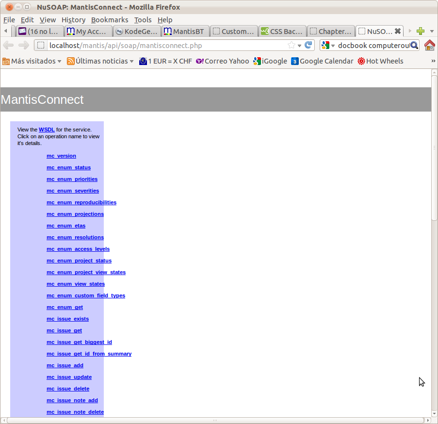
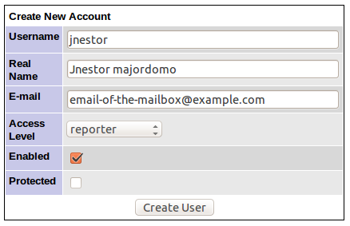

Table of Contents
List of Tables
- 1.1. Softtware used
As many actual software, this software relies in many external libraries to do its job. This isn't a novelty. However, I want to specify this list just in case everybody knows it.
Table 1.1. Softtware used
| Product | License / What it does |
|---|---|
| MantisConnect | Propietary. It costs 50 euros if you plan to use this software for business (what else you would want this software for, mm??) |
| Spring | |
We will start with the usual, how we write certain things in the document: program listings, admonitions, and stuff like that.
![[Caution]](gfx/caution.png) | This will be for special advices |
|---|---|
This box will be used when referring to things that, when unproperly done, may damage the correct behaviour of the program. |
![[Warning]](gfx/warning.png) | This will be for warnings |
|---|---|
We will use this box to refer to things that you have to put special care when doing them. |
![[Tip]](gfx/tip.png) | This will be for advices and tricks |
|---|---|
We will use this box to refer to things that must help in the configuration. |
In general, filenames along this book will appear
with this type of text: this-is-a-filename.txt.
Moreover, when refering to text that appear as an output
of the computer (like the output of a log file), they will
appear as this:
2012-52-25 00:52:57 INFO supermanhamuerto.nestor.MailReader - Opening session...
2012-52-25 00:52:57 INFO supermanhamuerto.nestor.MailReader - url:http://localhost/mantisbt-1.2.8/api/soap/mantisconnect.php
On the other hand, when speaking of things that must
be typed, the text will appear as this: dir.
If the computer outputs the text, it will be shown
as this: Hello world!!
Whenever possible, I'll avoid to give the same instructions for Windows™ and Linux, specially if they are more or less the same. This will make the text more readable. This document is highly technical and the audience is accustomed to “Linuxize” the windows commands or to “Windize” the linux ones.
Download the latest bundle of the website and uncompress it. After uncompressing the contents, you will find some things in it:
So you have downloaded the zip (or tgz) bundle, uncompressed it and now...what??
The aim of this document is to explain the basics for make Jnestor to do what is designed for, and to suit into your particular case as smoothly as possible.
There is only one configuration file in JNestor:
applicationContext.xml. If you
know something about java programming, you should
be aware that this file is in reality the configuration
file for the beans of the application. I've decided
to put the configuration in that file because that
allow me many advantages:
I don't need to make code for the configuration of the application: Spring takes this duty for me, allowing me to concentrate on other tasks
I can easily configure things like cuustom actions by wiring them to the proper list of beans
Even the log information is stored in the
applicationContext.xmlfile, making thus the unique configuration file for the whole application. You can forget of the hassle of having many configuration filesSaving a previous state of the configuration is easier: just make a copy of this file and you are done
| applicationContext, a blessing and a danger |
|---|---|
This model has also disadvantages: this file is and xml file, and because of this, any nuance can cause it to don't load properly. To prevent that cases, I strongly recommend to make copies of this file prior any important modification. |
![[Note]](gfx/note.png) | If you have reached this point... |
|---|---|
From time to time, in the configuration process, you will come across with sections like this: in this sections I will double-check the previous configurations, just to be sure the previous changes are working. |
Although the instruction I am giving here are for the configuration with the minimum impact, I suggest to take precautions in trying any new software.
So, the first thing we will do is to install a filter for the emails that JNestor will process. Only emails with the subject “yor-name” or “9778” will be processed, the rest will be left untouched.
In order to do so, open the
file applicationContext.xml
and search for filter.contains1.
You should find something like this:
<!-- LEAVE BLANK THIS FILTER TO PROCESS ALL EMAILS -->
<prop key="filter.contains1">.*9778.*</prop>
This is a filter who only will process the emails with the figures 9778 in the subject. While configuring JNestor, put whatever you want in substitution of this 9778, and after the configuration, remove this.
Mantis url is something like this:
http://server/mantis/api/soap/mantisconnect.php.
Probably, in the release you have configured the development server
I use, which is installed in localhost. Make the
proper changes in this url and put in the file.
| If you have reached this point... |
|---|---|
Check that the url of mantis works: open a browser and point it to the url you have made. You should see something like this:  |
JNestor only can enter the new issues in a specific project in Mantis. One mailbox, one project: if you have two projects, consider to have two mailboxes and two instances of JNestor running at the same time.
To guess the project number, just enter into mantis and click on -> . The list of projects in Mantis should appear.
Click on the project you want. In the address box of your browser,
you should see something like this:
http://localhost/mantis/manage_proj_edit_page.php?project_id=1.
The number that comes after project_id=
is the project number.
| Tip |
|---|---|
If you are not the administrator, there are other ways to guess the project number. If you try to move an issue (edit the issue and then click on the button ), you will see a list of the available projects. Just see the source code of this page and you will get a list of the projects with the respective id's. |
You need a mantis who has permission to enter his own issues in mantis. Everything in mantis is entered with an username, even the items put through the API.
To create a user for JNestor, just follow the following steps:
Enter in mantis with administrative privileges and ->
Click on the button
And enter the data of the new account. For the purpose of this manual, I've entered an username of
jnestor, the rest of the data is irrelevant. You have to enter a correct email address because you have to reset the password afterwards.You have to reset the password of this new user, but probably you are familiarized with mantis enough to do so. Remember that mantis
Probably is the most complex part of this, because too many parameters here, all of them inherited from JavaMail. If you work in a corporate enviroment, and have access to the email administrator, is a good idea to ask him (or her) what are the correct values here.
If not, or if you are working with publicly available network accounts, here is my advice: try to configure one email client (Thunderbird, Outlook). If you succeed in this, you are almost done to configure JNestor.
Email configuration is controlled via the following entries
in the applicationContex.xml filename
(see below). We will going over these sections
<!--
Example of secure mail configuration
-->
<!--
<prop key="mail.usessl">true</prop>
<prop key="mail.user">jnestor.test</prop>
<prop key="mail.password">superman_ha_muerto</prop>
<prop key="mail.store.host">imap.gmail.com</prop>
<prop key="mail.store.protocol">imap</prop>
<prop key="mail.imap.port">993</prop>
<prop key="mail.imap.socketFactory.port">993</prop>
<prop key="mail.imap.socketFactory.class">javax.net.ssl.SSLSocketFactory</prop>
<prop key="mail.store.inbox">INBOX</prop>
Thanks to http://magnuspo.wordpress.com/2008/05/30/javamail-secure-smtp/
<prop key="mail.smtp.host">smtp.googlemail.com</prop>
<prop key="mail.smtp.port">465</prop>
<prop key="mail.smtp.auth">true</prop>
<prop key="mail.smtp.socketFactory.port">465</prop>
<prop key="mail.smtp.socketFactory.class">javax.net.ssl.SSLSocketFactory</prop>
<prop key="mail.smtp.socketFactory.fallback">false</prop>
-->
<!--
Example of insecure mail configuration
-->
<prop key="mail.usessl">false</prop>
<prop key="mail.user">rluna</prop>
<prop key="mail.password">dixfont67</prop>
<prop key="mail.store.host">imap.arrakis.es</prop>
<prop key="mail.store.protocol">imap</prop>
<prop key="mail.imap.port">143</prop>
<prop key="mail.store.inbox">INBOX</prop>
<prop key="mail.smtp.host">smtp.arrakis.es</prop>
<prop key="mail.smtp.port">587</prop>
<!--
What will be the maximum attachment size in bytes?
-->
<prop key="maximumAttachmentSize">15000000</prop>
The configuration of logging of the application is located in the
file applicationContext.xml. As opposed to
other applications, that should have a working log4j.properties,
here it is embedded into the application context.
In the file applicationContext.xml, search
for “loggerConfigurator” and you will see something
like this:
<props>
<!--
root logger configuration: it will log all errors (including trace messages)
and them will be directed to the logfile appender
-->
<prop key="log4j.rootLogger">ERROR, logfile</prop>
<prop key="log4j.appender.logfile">org.apache.log4j.RollingFileAppender</prop>
<prop key="log4j.appender.logfile.maxFilesize">1MB</prop>
<prop key="log4j.appender.logfile.maxBackupIndex">9</prop>
<prop key="log4j.appender.logfile.File">PUT-HERE-A-CORRECT-FILENAME.LOG</prop>
<prop key="log4j.appender.logfile.layout">org.apache.log4j.PatternLayout</prop>
<prop key="log4j.appender.logfile.layout.ConversionPattern">%d{yyyy-mm-dd HH:mm:ss} %-5p %-40c{3} - %m%n</prop>
</props>
This is a typical configuration of a log file, but with the difference that the properties and their values are stored in form of xml data.
You will see a line like this:
<prop key="log4j.appender.logfile.File">PUT-HERE-A-CORRECT-FILENAME.LOG</prop>
You have to enter a correct filename there. If not, the filename
PUT-HERE-A-CORRECT-FILENAME.LOG will be used,
storing the log information who-knows-where.
The detail of loggin is controlled via this line:
<prop key="log4j.rootLogger">ERROR, logfile</prop>
By default is configured in the ERROR level,
which is the most basic level of logging: it will only appear the
errors of the program. You can select other levels, from less
informational to most informational are:
FATAL: only informs of the most severe errors
ERROR (current level): only informs of errors during the operation of the program
WARN: more detailed, informs of warnings
INFO
DEBUG: very detailed. Inform almost of everything.
TRACE
| Tip |
|---|---|
It is suggested to change this level to |
Consult the
documentation of log4j in order to do things like
email certain types of errors by creating an extra
appender of type
SMTPAppender.
When you are finished, remember the filter we put in the section called “Avoid to do something you could lament” and remove it.
You know, open the file applicationContext.xml
and locate the keyworkds filter.contains1
and leave it blank.